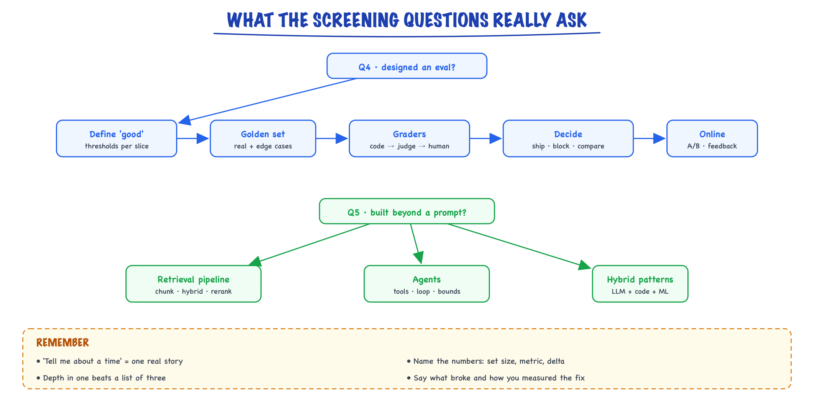

What AI interviews test // Start here
What the eval and RAG/agent screening questions are really asking, and what a strong answer looks like.
01 — At a glance

Q4 asks whether you can measure an AI feature; Q5 asks whether you have built beyond one prompt. Both want one specific story with numbers.
02 — Q4: "Tell me about a time you designed an eval framework or test plan for an ML/LLM feature"
Both are behavioral-technical questions: "tell me about a time" means they want one specific story with real decisions, numbers, and trade-offs, not a definition.
LLM outputs are non-deterministic and open-ended, so "it looked good when I tried it" is the most common way AI features fail in production. The interviewer wants evidence that you:
- Defined what good means for the feature, in measurable terms, before building.
- Built a test set from realistic and edge-case inputs, not five handpicked examples.
- Chose metrics and graders that fit (exact match, execution, rubric-based LLM judge, human review) and checked the judge itself.
- Used it to make decisions: compare prompts/models, block regressions in CI, decide to ship.
- Connected offline evals to online signals (A/B test, user feedback, monitoring).
"ML" in the question means classic ML features count too. Offline/online evaluation of a ranking or bandit system is a legitimate answer.
03 — Q5: "Hands-on experience with retrieval pipelines, agents, or hybrid LLM patterns"
- Retrieval pipelines: RAG. Chunking, embeddings, vector/hybrid search, reranking, grounding the model in your data.
- Agents: an LLM in a loop that chooses and calls tools (APIs, code, browser, DB) until a task is done.
- Hybrid LLM patterns: systems mixing LLMs with deterministic code, rules, classic ML, caches, or humans. Routers, cascades, LLM-extract + code-validate, LLM-labels + small-model-serves.
The "or" matters: depth in one beats a shallow list of all three. They're probing whether you've hit the real problems: bad retrieval, looping agents, cost, latency, prompt injection, and how you measured fixes.
04 — What separates strong answers from weak ones
Structure: Situation, Task, Action, Result, plus what you'd do differently. Two minutes spoken, or 150–250 words written. Fill the brackets only with things you actually did and numbers you actually measured; "I didn't measure X, next time I would" is a strong, honest move.
| Weak | Strong |
|---|---|
| "We tested it with some examples and it worked well." | "I built a 300-case set from production logs, sliced by query type, gated releases on ≥85% per slice." |
| "We used RAG with a vector DB." | "Recall@5 was 62% with dense only; hybrid + rerank got it to 88%; that fixed most wrong answers." |
| "I built an agent with LangChain." | "Agent hit the step cap on 20% of tasks; I moved the fixed steps into a workflow and kept the agent for one branch; success rose, cost halved." |
| Lists every tool you've heard of | One system, the decisions you made, the trade-off you accepted, the number that moved |